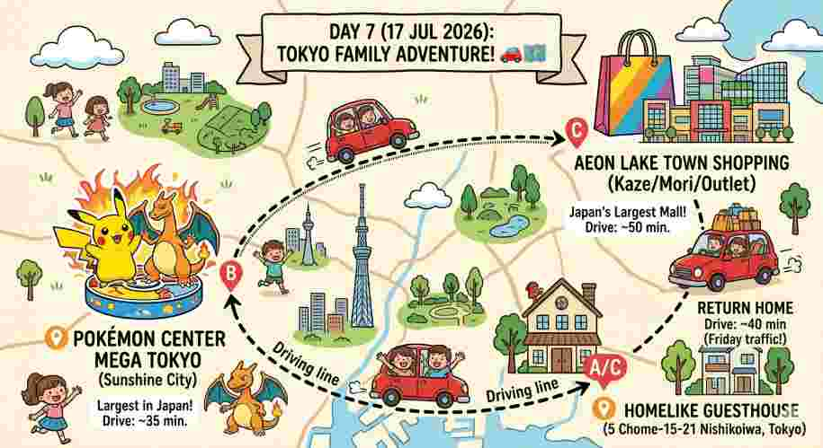

✨ 2026年7月17日 (五) ✨
Day 7 親子童趣冒險流

📍 Sunshine City 寶可夢中心
10:00 出發
🚗
預估車程：
約 35 ~ 45 分鐘（由西小岩出發）
🗺️
導航路線：
Google 地圖連結
🌟
亮點介紹：
這是全日本最大的寶可夢中心 Mega Tokyo！現場有巨大的噴火龍、超夢迎接大家，還有獨家的「Pokémon GO Lab」互動區域與超萌的外帶甜點店 Pikachu Sweets，孩子絕對超愛！
🅿️
停車資訊：
大樓附設地下停車場。詳細收費與折抵請參考
Sunshine City 官方停車指南
。
📍 Yodobashi 池袋 (5F 玩具層)
彈性加碼
💡
時間充裕時推薦順遊！
🏬
商場介紹：
這是近年全新開幕的池袋矚目旗艦店！5 樓玩具童玩專區規模極大，擁有最新、最齊全的扭蛋機牆、動漫模型周邊與熱門玩具，非常好買！
🌐
官方網站：
Yodobashi 池袋店官網
🅿️
停車優惠：
消費滿 5,000日圓免停 1 小時 / 滿 10,000日圓免停 2 小時 / 滿 50,000日圓最高免停 3 小時。
🗺️
兩大特約車場導航：
特約停車場 A
|
特約停車場 B
ℹ️
詳情參考：
官方停車場折抵說明網頁
Google 地圖連結
📍 Aeon Lake Town 越谷 (Mori棟)
中午時段
🚗
預估車程：
從池袋出發開車約 45 ~ 60 分鐘。
🛍️
商場特色：
全日本規模最大的巨型購物中心，極度適合親子血拼！
🍜
美食必吃
商場內有一蘭拉麵喔！
位於 Mori 棟 1 樓的美食街，位置超方便，血拼完剛好帶著孩子一起享用！
🌐
商場官網：
Aeon Lake Town (Mori) 網頁
🅿️
停車位置定位：
平日基本上有免費停車時數，假日車多建議直接導航至特設停車場入口：
點我開啟 Google 停車場導航
。
📍 溫馨開車返回起點
20:00 返程
🚗
預估車程：
從 Aeon Lake Town 返回西小岩約 40 ~ 50 分鐘。
🏠
回程終點：
5 Chome-15-21 Nishikoiwa, Edogawa City, Tokyo